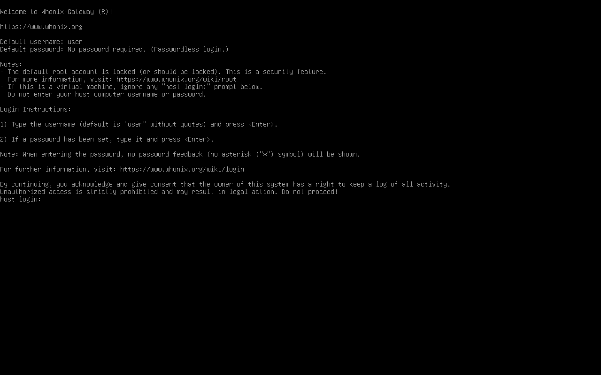

whonix-func inconclusive
exit 2
dm-whonix-pair: [functional-cli] boot Gateway (Whonix-Gateway-CLI)
dm-whonix-pair: [functional-cli] boot Workstation (Whonix-Workstation-CLI) into the user session
dm-shared-apt-repo: attached shared -> /srv/derivative-maker on Whonix-Workstation-CLI
dm-shared-apt-repo: mounts at /mnt/shared on the next boot (mnt-shared-vbox.service)
dm-whonix-pair: [functional-cli] wait for Tor egress (systemcheck SocksPort + TransPort)
tr: write error: Broken pipe
[INFO] [systemcheck] SocksPort IP Leak Test: Testing Tor's SocksPort (SOCKS_PORT_SYSTEMCHECK: 9110)...
[INFO] [systemcheck] SocksPort IP Leak Test: Connected to Tor.
[INFO] [systemcheck] system default networking IP Leak Test: system default networking IP Leak Test...
[ERROR] [systemcheck] system default networking IP Leak Test Test Result: Tor's TransPort was not reachable.
It is normal for this error to temporarily occur.
(curl exit code: [35] - [SSL connect error. The SSL handshaking failed.])
dm-whonix-pair: Tor not confirmed yet (attempt 1); retrying
tr: write error: Broken pipe
[INFO] [systemcheck] SocksPort IP Leak Test: Testing Tor's SocksPort (SOCKS_PORT_SYSTEMCHECK: 9110)...
[INFO] [systemcheck] SocksPort IP Leak Test: Connected to Tor.
[INFO] [systemcheck] system default networking IP Leak Test: system default networking IP Leak Test...
[INFO] [systemcheck] system default networking IP Leak Test: Connected to Tor.
dm-whonix-pair: [functional-cli] enable the local apt repo (whonix) in the Workstation
Ign:1 file:/mnt/shared/aptrepo_local/kicksecure local InRelease
Ign:2 file:/mnt/shared/aptrepo_local/whonix local InRelease
Get:3 file:/mnt/shared/aptcache/debian trixie InRelease [140 kB]
Get:4 file:/mnt/shared/aptcache/debian trixie-updates InRelease [47.3 kB]
Get:5 file:/mnt/shared/aptcache/debian-security trixie-security InRelease [43.4 kB]
Get:6 file:/mnt/shared/aptrepo_local/kicksecure local Release [57.5 kB]
Get:7 file:/mnt/shared/aptrepo_local/whonix local Release [56.7 kB]
Get:3 file:/mnt/shared/aptcache/debian trixie InRelease [140 kB]
Get:4 file:/mnt/shared/aptcache/debian trixie-updates InRelease [47.3 kB]
Get:5 file:/mnt/shared/aptcache/debian-security trixie-security InRelease [43.4 kB]
Get:6 file:/mnt/shared/aptrepo_local/kicksecure local Release [57.5 kB]
Ign:8 file:/mnt/shared/aptrepo_local/kicksecure local Release.gpg
Get:7 file:/mnt/shared/aptrepo_local/whonix local Release [56.7 kB]
Get:9 file:/mnt/shared/aptrepo_local/kicksecure local/main amd64 Packages [38.5 kB]
Ign:10 file:/mnt/shared/aptrepo_local/whonix local Release.gpg
Get:11 file:/mnt/shared/aptrepo_local/kicksecure local/non-free amd64 Packages [1,549 B]
Get:12 file:/mnt/shared/aptrepo_local/kicksecure local/contrib amd64 Packages [501 B]
Get:13 file:/mnt/shared/aptrepo_local/whonix local/main amd64 Packages [14.2 kB]
Get:14 file:/mnt/shared/aptcache/debian trixie/main amd64 Packages [9,678 kB]
Get:15 file:/mnt/shared/aptcache/debian trixie/non-free amd64 Packages [100 kB]
Get:16 file:/mnt/shared/aptcache/debian trixie/contrib amd64 Packages [53.9 kB]
Get:17 file:/mnt/shared/aptcache/debian trixie/non-free-firmware amd64 Packages [6,884 B]
Get:18 file:/mnt/shared/aptcache/debian trixie-updates/main amd64 Packages [1,108 B]
Get:19 file:/mnt/shared/aptcache/debian-security trixie-security/contrib amd64 Packages [3,152 B]
Get:20 file:/mnt/shared/aptcache/debian-security trixie-security/non-free-firmware amd64 Packages [544 B]
Get:21 file:/mnt/shared/aptcache/debian-security trixie-security/main amd64 Packages [304 kB]
Reading package lists...
dm-whonix-pair: [functional-cli] verify the local build payloads are installed in the Workstation
Reading package lists...
Building dependency tree...
Reading state information...
0 upgraded, 0 newly installed, 48 reinstalled, 0 to remove and 3 not upgraded.
Need to get 0 B/4,593 kB of archives.
After this operation, 0 B of additional disk space will be used.
Get:1 file:/mnt/shared/aptrepo_local/kicksecure local/main amd64 apparmor-profiles-kicksecure all 3:37.9-1 [90.7 kB]
Get:2 file:/mnt/shared/aptrepo_local/kicksecure local/main amd64 dist-base-files all 3:16.6-1 [203 kB]
Get:3 file:/mnt/shared/aptrepo_local/kicksecure local/main amd64 dist-general-cli all 3:37.9-1 [91.2 kB]
Get:4 file:/mnt/shared/aptrepo_local/kicksecure local/main amd64 dist-general-server all 3:37.9-1 [90.6 kB]
Get:5 file:/mnt/shared/aptrepo_local/kicksecure local/main amd64 dist-nonqubes-cli all 3:37.9-1 [90.7 kB]
Get:6 file:/mnt/shared/aptrepo_local/kicksecure local/main amd64 security-misc-shared all 3:54.2-1 [322 kB]
Get:7 file:/mnt/shared/aptrepo_local/whonix local/main amd64 whonix-general-cli all 3:27.4-1 [72.0 kB]
Get:8 file:/mnt/shared/aptrepo_local/whonix local/main amd64 whonix-workstation-general-cli all 3:27.4-1 [72.0 kB]
Get:9 file:/mnt/shared/aptrepo_local/whonix local/main amd64 whonix-workstation-nonqubes-cli all 3:27.4-1 [72.0 kB]
Get:10 file:/mnt/shared/aptrepo_local/whonix local/main amd64 whonix-workstation-vm-cli all 3:27.4-1 [72.0 kB]
Get:11 file:/mnt/shared/aptrepo_local/whonix local/main amd64 whonix-workstation-vm-server all 3:27.4-1 [72.0 kB]
Get:12 file:/mnt/shared/aptrepo_local/whonix local/main amd64 anon-apps-config all 3:10.4-1 [86.1 kB]
Get:13 file:/mnt/shared/aptrepo_local/kicksecure local/main amd64 anon-apt-sources-list all 3:8.0-1 [33.6 kB]
Get:14 file:/mnt/shared/aptrepo_local/whonix local/main amd64 anon-ws-base-files all 3:7.6-1 [365 kB]
Get:15 file:/mnt/shared/aptrepo_local/whonix local/main amd64 anon-ws-disable-stacked-tor all 3:11.4-1 [57.0 kB]
Get:16 file:/mnt/shared/aptrepo_local/kicksecure local/main amd64 apparmor-profile-dist all 3:10.7-1 [39.4 kB]
Get:17 file:/mnt/shared/aptrepo_local/kicksecure local/main amd64 apparmor-profile-hexchat all 3:5.7-1 [24.1 kB]
Get:18 file:/mnt/shared/aptrepo_local/kicksecure local/main amd64 apparmor-profile-thunderbird all 3:6.3-1 [27.3 kB]
Get:19 file:/mnt/shared/aptrepo_local/kicksecure local/main amd64 apparmor-profile-torbrowser all 3:10.0-1 [35.9 kB]
Get:20 file:/mnt/shared/aptrepo_local/kicksecure local/main amd64 bindp all 3:4.8-1 [15.9 kB]
Get:21 file:/mnt/shared/aptrepo_local/kicksecure local/main amd64 bootclockrandomization all 3:8.3-1 [33.0 kB]
Get:22 file:/mnt/shared/aptrepo_local/kicksecure local/main amd64 damngpl all 3:4.9-1 [14.1 kB]
Get:23 file:/mnt/shared/aptrepo_local/kicksecure local/main amd64 dist-system-metadata all 3:1.1-1 [42.2 kB]
Get:24 file:/mnt/shared/aptrepo_local/kicksecure local/main amd64 dummy-dependency-mta all 3:37.9-1 [90.7 kB]
Get:25 file:/mnt/shared/aptrepo_local/kicksecure local/main amd64 grub-live all 3:11.5-1 [47.7 kB]
Get:26 file:/mnt/shared/aptrepo_local/kicksecure local/main amd64 grub-live-dracut all 3:11.5-1 [38.6 kB]
Get:27 file:/mnt/shared/aptrepo_local/kicksecure local/main amd64 helper-scripts all 3:55.6-1 [488 kB]
Get:28 file:/mnt/shared/aptrepo_local/kicksecure local/main amd64 initializer-dist all 3:9.6-1 [48.3 kB]
Get:29 file:/mnt/shared/aptrepo_local/kicksecure local/main amd64 legacy-dist all 3:21.7-1 [73.9 kB]
Get:30 file:/mnt/shared/aptrepo_local/kicksecure local/main amd64 msgcollector all 3:18.1-1 [120 kB]
Get:31 file:/mnt/shared/aptrepo_local/kicksecure local/main amd64 privleap all 3:7.1-1 [104 kB]
Get:32 file:/mnt/shared/aptrepo_local/kicksecure local/main amd64 repository-dist all 3:14.1-1 [64.9 kB]
Get:33 file:/mnt/shared/aptrepo_local/kicksecure local/main amd64 sdwdate all 3:29.6-1 [182 kB]
Get:34 file:/mnt/shared/aptrepo_local/kicksecure local/main amd64 security-misc-server all 3:54.2-1 [222 kB]
Get:35 file:/mnt/shared/aptrepo_local/kicksecure local/main amd64 setup-dist all 3:12.6-1 [47.7 kB]
Get:36 file:/mnt/shared/aptrepo_local/kicksecure local/main amd64 swap-file-creator all 3:9.7-1 [42.9 kB]
Get:37 file:/mnt/shared/aptrepo_local/kicksecure local/main amd64 systemcheck all 3:53.3-1 [247 kB]
Get:38 file:/mnt/shared/aptrepo_local/kicksecure local/main amd64 timesanitycheck all 3:10.6-1 [32.3 kB]
Get:39 file:/mnt/shared/aptrepo_local/kicksecure local/main amd64 tirdad amd64 0:0.3.5-1 [19.5 kB]
Get:40 file:/mnt/shared/aptrepo_local/kicksecure local/main amd64 tirdad-dkms amd64 0:0.3.5-1 [22.4 kB]
Get:41 file:/mnt/shared/aptrepo_local/kicksecure local/main amd64 tor-ctrl all 3:7.4-1 [45.1 kB]
Get:42 file:/mnt/shared/aptrepo_local/kicksecure local/main amd64 usability-misc all 3:42.1-1 [248 kB]
Get:43 file:/mnt/shared/aptrepo_local/whonix local/main amd64 uwt all 3:10.4-1 [56.4 kB]
Get:44 file:/mnt/shared/aptrepo_local/kicksecure local/main amd64 vm-config-dist all 3:18.5-1 [85.5 kB]
Get:45 file:/mnt/shared/aptrepo_local/whonix local/main amd64 whonix-base-files all 3:12.3-1 [48.5 kB]
Get:46 file:/mnt/shared/aptrepo_local/whonix local/main amd64 whonix-firewall all 3:19.5-1 [100 kB]
Get:47 file:/mnt/shared/aptrepo_local/whonix local/main amd64 whonix-workstation-packages-dependencies-pre all 3:27.4-1 [72.0 kB]
Get:48 file:/mnt/shared/aptrepo_local/whonix local/main amd64 whonix-ws-network-conf all 3:5.1-1 [24.5 kB]
debconf: unable to initialize frontend: Dialog
debconf: (Dialog frontend will not work on a dumb terminal, an emacs shell buffer, or without a controlling terminal.)
debconf: falling back to frontend: Readline
debconf: unable to initialize frontend: Readline
debconf: (This frontend requires a controlling tty.)
debconf: falling back to frontend: Teletype
debconf: unable to initialize frontend: Teletype
debconf: (This frontend requires a controlling tty.)
debconf: falling back to frontend: Noninteractive
Preconfiguring packages ...
(Reading database ... (Reading database ... 5%(Reading database ... 10%(Reading database ... 15%(Reading database ... 20%(Reading database ... 25%(Reading database ... 30%(Reading database ... 35%(Reading database ... 40%(Reading database ... 45%(Reading database ... 50%(Reading database ... 55%(Reading database ... 60%(Reading database ... 65%(Reading database ... 70%(Reading database ... 75%(Reading database ... 80%(Reading database ... 85%(Reading database ... 90%(Reading database ... 95%(Reading database ... 100%(Reading database ... 63320 files and directories currently installed.)
Preparing to unpack .../legacy-dist_21.7-1_all.deb ...
Unpacking legacy-dist (3:21.7-1) over (3:21.7-1) ...
Preparing to unpack .../helper-scripts_55.6-1_all.deb ...
Unpacking helper-scripts (3:55.6-1) over (3:55.6-1) ...
Setting up helper-scripts (3:55.6-1) ...
Setting up legacy-dist (3:21.7-1) ...
(Reading database ... (Reading database ... 5%(Reading database ... 10%(Reading database ... 15%(Reading database ... 20%(Reading database ... 25%(Reading database ... 30%(Reading database ... 35%(Reading database ... 40%(Reading database ... 45%(Reading database ... 50%(Reading database ... 55%(Reading database ... 60%(Reading database ... 65%(Reading database ... 70%(Reading database ... 75%(Reading database ... 80%(Reading database ... 85%(Reading database ... 90%(Reading database ... 95%(Reading database ... 100%(Reading database ... 63320 files and directories currently installed.)
Preparing to unpack .../0-apparmor-profiles-kicksecure_37.9-1_all.deb ...
Unpacking apparmor-profiles-kicksecure (3:37.9-1) over (3:37.9-1) ...
Preparing to unpack .../1-dist-base-files_16.6-1_all.deb ...
Unpacking dist-base-files (3:16.6-1) over (3:16.6-1) ...
Preparing to unpack .../2-dist-general-cli_37.9-1_all.deb ...
Unpacking dist-general-cli (3:37.9-1) over (3:37.9-1) ...
Preparing to unpack .../3-dist-general-server_37.9-1_all.deb ...
Unpacking dist-general-server (3:37.9-1) over (3:37.9-1) ...
Preparing to unpack .../4-dist-nonqubes-cli_37.9-1_all.deb ...
Unpacking dist-nonqubes-cli (3:37.9-1) over (3:37.9-1) ...
Preparing to unpack .../5-security-misc-shared_54.2-1_all.deb ...
warn: The user `root' is already a member of `sudo'.
warn: The user `root' is already a member of `console'.
Unpacking security-misc-shared (3:54.2-1) over (3:54.2-1) ...
debconf: unable to initialize frontend: Dialog
debconf: (Dialog frontend will not work on a dumb terminal, an emacs shell buffer, or without a controlling terminal.)
debconf: falling back to frontend: Readline
debconf: unable to initialize frontend: Readline
debconf: (This frontend requires a controlling tty.)
debconf: falling back to frontend: Teletype
debconf: unable to initialize frontend: Teletype
debconf: (This frontend requires a controlling tty.)
debconf: falling back to frontend: Noninteractive
Preparing to unpack .../6-anon-apps-config_10.4-1_all.deb ...
Unpacking anon-apps-config (3:10.4-1) over (3:10.4-1) ...
Setting up anon-apps-config (3:10.4-1) ...
Current default time zone: 'Etc/UTC'
Local time is now: Sun Nov 15 14:48:42 UTC 2026.
Universal Time is now: Sun Nov 15 14:48:42 UTC 2026.
(Reading database ... (Reading database ... 5%(Reading database ... 10%(Reading database ... 15%(Reading database ... 20%(Reading database ... 25%(Reading database ... 30%(Reading database ... 35%(Reading database ... 40%(Reading database ... 45%(Reading database ... 50%(Reading database ... 55%(Reading database ... 60%(Reading database ... 65%(Reading database ... 70%(Reading database ... 75%(Reading database ... 80%(Reading database ... 85%(Reading database ... 90%(Reading database ... 95%(Reading database ... 100%(Reading database ... 63320 files and directories currently installed.)
Preparing to unpack .../00-whonix-general-cli_27.4-1_all.deb ...
Unpacking whonix-general-cli (3:27.4-1) over (3:27.4-1) ...
Preparing to unpack .../01-whonix-workstation-general-cli_27.4-1_all.deb ...
Unpacking whonix-workstation-general-cli (3:27.4-1) over (3:27.4-1) ...
Preparing to unpack .../02-whonix-workstation-nonqubes-cli_27.4-1_all.deb ...
Unpacking whonix-workstation-nonqubes-cli (3:27.4-1) over (3:27.4-1) ...
Preparing to unpack .../03-whonix-workstation-vm-cli_27.4-1_all.deb ...
Unpacking whonix-workstation-vm-cli (3:27.4-1) over (3:27.4-1) ...
Preparing to unpack .../04-whonix-workstation-vm-server_27.4-1_all.deb ...
Unpacking whonix-workstation-vm-server (3:27.4-1) over (3:27.4-1) ...
Preparing to unpack .../05-anon-apt-sources-list_8.0-1_all.deb ...
Unpacking anon-apt-sources-list (3:8.0-1) over (3:8.0-1) ...
Preparing to unpack .../06-anon-ws-base-files_7.6-1_all.deb ...
Unpacking anon-ws-base-files (3:7.6-1) over (3:7.6-1) ...
Preparing to unpack .../07-anon-ws-disable-stacked-tor_11.4-1_all.deb ...
Unpacking anon-ws-disable-stacked-tor (3:11.4-1) over (3:11.4-1) ...
Preparing to unpack .../08-apparmor-profile-dist_10.7-1_all.deb ...
Unpacking apparmor-profile-dist (3:10.7-1) over (3:10.7-1) ...
Preparing to unpack .../09-apparmor-profile-hexchat_5.7-1_all.deb ...
Unpacking apparmor-profile-hexchat (3:5.7-1) over (3:5.7-1) ...
Preparing to unpack .../10-apparmor-profile-thunderbird_6.3-1_all.deb ...
Unpacking apparmor-profile-thunderbird (3:6.3-1) over (3:6.3-1) ...
Preparing to unpack .../11-apparmor-profile-torbrowser_10.0-1_all.deb ...
Unpacking apparmor-profile-torbrowser (3:10.0-1) over (3:10.0-1) ...
Preparing to unpack .../12-bindp_4.8-1_all.deb ...
Unpacking bindp (3:4.8-1) over (3:4.8-1) ...
Preparing to unpack .../13-bootclockrandomization_8.3-1_all.deb ...
Unpacking bootclockrandomization (3:8.3-1) over (3:8.3-1) ...
Preparing to unpack .../14-damngpl_4.9-1_all.deb ...
Unpacking damngpl (3:4.9-1) over (3:4.9-1) ...
Preparing to unpack .../15-dist-system-metadata_1.1-1_all.deb ...
Unpacking dist-system-metadata (3:1.1-1) over (3:1.1-1) ...
Preparing to unpack .../16-dummy-dependency-mta_37.9-1_all.deb ...
Unpacking dummy-dependency-mta (3:37.9-1) over (3:37.9-1) ...
Preparing to unpack .../17-grub-live_11.5-1_all.deb ...
Unpacking grub-live (3:11.5-1) over (3:11.5-1) ...
Preparing to unpack .../18-grub-live-dracut_11.5-1_all.deb ...
Unpacking grub-live-dracut (3:11.5-1) over (3:11.5-1) ...
Preparing to unpack .../19-initializer-dist_9.6-1_all.deb ...
Unpacking initializer-dist (3:9.6-1) over (3:9.6-1) ...
Preparing to unpack .../20-msgcollector_18.1-1_all.deb ...
Unpacking msgcollector (3:18.1-1) over (3:18.1-1) ...
Preparing to unpack .../21-privleap_7.1-1_all.deb ...
Unpacking privleap (3:7.1-1) over (3:7.1-1) ...
Preparing to unpack .../22-repository-dist_14.1-1_all.deb ...
Unpacking repository-dist (3:14.1-1) over (3:14.1-1) ...
Preparing to unpack .../23-sdwdate_29.6-1_all.deb ...
Unpacking sdwdate (3:29.6-1) over (3:29.6-1) ...
Preparing to unpack .../24-security-misc-server_54.2-1_all.deb ...
Unpacking security-misc-server (3:54.2-1) over (3:54.2-1) ...
Preparing to unpack .../25-setup-dist_12.6-1_all.deb ...
Unpacking setup-dist (3:12.6-1) over (3:12.6-1) ...
Preparing to unpack .../26-swap-file-creator_9.7-1_all.deb ...
Unpacking swap-file-creator (3:9.7-1) over (3:9.7-1) ...
Preparing to unpack .../27-systemcheck_53.3-1_all.deb ...
Unpacking systemcheck (3:53.3-1) over (3:53.3-1) ...
Preparing to unpack .../28-timesanitycheck_10.6-1_all.deb ...
Unpacking timesanitycheck (3:10.6-1) over (3:10.6-1) ...
Preparing to unpack .../29-tirdad_0.3.5-1_amd64.deb ...
Unpacking tirdad (0.3.5-1) over (0.3.5-1) ...
Preparing to unpack .../30-tirdad-dkms_0.3.5-1_amd64.deb ...
Module tirdad/0.1 for kernel 6.12.116+deb13-amd64 (x86_64):
Before uninstall, this module version was ACTIVE on this kernel.
Deleting /lib/modules/6.12.116+deb13-amd64/updates/dkms/tirdad.ko.xz
Running depmod.... done.
Deleting module tirdad/0.1 completely from the DKMS tree.
Unpacking tirdad-dkms (0.3.5-1) over (0.3.5-1) ...
Preparing to unpack .../31-tor-ctrl_7.4-1_all.deb ...
Unpacking tor-ctrl (3:7.4-1) over (3:7.4-1) ...
Preparing to unpack .../32-usability-misc_42.1-1_all.deb ...
Unpacking usability-misc (3:42.1-1) over (3:42.1-1) ...
Preparing to unpack .../33-uwt_10.4-1_all.deb ...
Unpacking uwt (3:10.4-1) over (3:10.4-1) ...
Preparing to unpack .../34-vm-config-dist_18.5-1_all.deb ...
Unpacking vm-config-dist (3:18.5-1) over (3:18.5-1) ...
Preparing to unpack .../35-whonix-base-files_12.3-1_all.deb ...
Unpacking whonix-base-files (3:12.3-1) over (3:12.3-1) ...
Preparing to unpack .../36-whonix-firewall_19.5-1_all.deb ...
Unpacking whonix-firewall (3:19.5-1) over (3:19.5-1) ...
Preparing to unpack .../37-whonix-workstation-packages-dependencies-pre_27.4-1_all.deb ...
Unpacking whonix-workstation-packages-dependencies-pre (3:27.4-1) over (3:27.4-1) ...
Preparing to unpack .../38-whonix-ws-network-conf_5.1-1_all.deb ...
Unpacking whonix-ws-network-conf (3:5.1-1) over (3:5.1-1) ...
Setting up dummy-dependency-mta (3:37.9-1) ...
Setting up privleap (3:7.1-1) ...
Setting up setup-dist (3:12.6-1) ...
Setting up anon-ws-base-files (3:7.6-1) ...
Generating grub configuration file ...
Found theme: /boot/grub/themes/whonix-workstation/theme.txt
Found linux image: /boot/vmlinuz-6.12.116+deb13-amd64
Found initrd image: /boot/initrd.img-6.12.116+deb13-amd64
Found linux image: /boot/vmlinuz-6.12.116+deb13-amd64
Found initrd image: /boot/initrd.img-6.12.116+deb13-amd64
Found linux image: /boot/vmlinuz-6.12.116+deb13-amd64
Found initrd image: /boot/initrd.img-6.12.116+deb13-amd64
Found linux image: /boot/vmlinuz-6.12.116+deb13-amd64
Found initrd image: /boot/initrd.img-6.12.116+deb13-amd64
Adding boot menu entry for UEFI Firmware Settings ...
done
Setting up msgcollector (3:18.1-1) ...
Setting up apparmor-profile-torbrowser (3:10.0-1) ...
Setting up dist-base-files (3:16.6-1) ...
'/usr/share/derivative-base-files/repart-d_50-root.conf' -> '/usr/lib/repart.d/50-root.conf'
Setting up dist-system-metadata (3:1.1-1) ...
Setting up timesanitycheck (3:10.6-1) ...
Setting up grub-live (3:11.5-1) ...
Setting up bootclockrandomization (3:8.3-1) ...
Setting up bindp (3:4.8-1) ...
gcc -g bindp.c -o libindp.so -nostartfiles -shared -O2 -Wall -Wextra -Wformat -Wformat=2 -Wconversion -Wimplicit-fallthrough -Werror=format-security -Werror=implicit -Werror=int-conversion -Werror=incompatible-pointer-types -Wformat-overflow -Wformat-signedness -Wformat-truncation -Wnull-dereference -Winit-self -Wmissing-include-dirs -Wshift-negative-value -Wshift-overflow -Wswitch-default -Wuninitialized -Walloca -Warray-bounds -Wfloat-equal -Wshadow -Wpointer-arith -Wundef -Wunused-macros -Wbad-function-cast -Wcast-qual -Wcast-align -Wwrite-strings -Wdate-time -Wstrict-prototypes -Wold-style-definition -Wredundant-decls -Winvalid-utf8 -Wvla -Wdisabled-optimization -Wstack-protector -Wdeclaration-after-statement -Wtrampolines -Wbidi-chars=any,ucn -Wformat-overflow=2 -Wformat-truncation=2 -Wshift-overflow=2 -Wtrivial-auto-var-init -Wstringop-overflow=3 -Wstrict-flex-arrays -Walloc-zero -Warray-bounds=2 -Wattribute-alias=2 -Wduplicated-branches -Wduplicated-cond -Wcast-align=strict -Wjump-misses-init -Wlogical-op -U_FORTIFY_SOURCE -D_FORTIFY_SOURCE=3 -fstack-clash-protection -fstack-protector-all -fno-delete-null-pointer-checks -fno-strict-overflow -fno-strict-aliasing -fstrict-flex-arrays=3 -ftrivial-auto-var-init=pattern -fPIC -fcf-protection=full -fzero-call-used-regs=all -Wl,-z,nodlopen -Wl,-z,noexecstack -Wl,-z,relro -Wl,-z,now -Wl,-z,separate-code -Wl,--as-needed -Wl,--no-copy-dt-needed-entries -ldl
Setting up apparmor-profile-thunderbird (3:6.3-1) ...
Setting up swap-file-creator (3:9.7-1) ...
Setting up repository-dist (3:14.1-1) ...
Setting up uwt (3:10.4-1) ...
Setting up vm-config-dist (3:18.5-1) ...
/usr/bin/vbox-guest-installer (part of package 'vm-config-dist') INFO: This is VirtualBox guest additions from Debian package 'virtualbox-guest-additions-iso' installation helper by Kicksecure developers.
/usr/bin/vbox-guest-installer INFO: VirtualBox guest additions package 'virtualbox-guest-additions-iso' installed.
/usr/bin/vbox-guest-installer INFO: Extracting file '/usr/share/virtualbox/VBoxGuestAdditions.iso' (from package 'virtualbox-guest-additions-iso') to folder '/var/cache/vm-config-dist/vbox-guest-additions-extracted-iso' now...
/usr/bin/vbox-guest-installer INFO: Running '/var/cache/vm-config-dist/vbox-guest-additions-extracted-iso/VBoxLinuxAdditions.run --check' now...
./VBoxLinuxAdditions.run does not contain an embedded SHA256 checksum.
0% 62% 100%
/usr/bin/vbox-guest-installer INFO: Extracting file '/var/cache/vm-config-dist/vbox-guest-additions-extracted-iso/VBoxLinuxAdditions.run' to folder '/var/cache/vm-config-dist/vbox-guest-additions-extracted-makeself' now...
Creating directory /var/cache/vm-config-dist/vbox-guest-additions-extracted-makeself
Verifying archive integrity... 0% 62% 100% MD5 checksums are OK. All good.
Uncompressing VirtualBox 7.2.12 Guest Additions for Linux 0% 62% 100%
/usr/bin/vbox-guest-installer INFO: Running '/var/cache/vm-config-dist/vbox-guest-additions-extracted-makeself/install.sh force force' now...
VirtualBox Guest Additions installer
Removing installed version 7.2.12 of VirtualBox Guest Additions...
dm-whonix-pair: ERROR: Whonix-Workstation-CLI: local payload verification failed -- the locally-built packages were not actually installed (INCONCLUSIVE, not a release FAIL)
pair-defined
[state card -- rendered text, not a screenshot]
Whonix pair under test (pre-boot)
Gateway VM: Whonix-Gateway-CLI
memory=768
vram=16
firmware="BIOS"
VMState="poweroff"
nic1="nat"
Workstation VM: Whonix-Workstation-CLI
memory=768
vram=16
firmware="BIOS"
VMState="poweroff"
nic1="intnet"
inconclusive content: UNVALIDATED (no golden) gateway-booted

inconclusive content: UNVALIDATED (no golden) workstation-booted

gateway-tor-bootstrap
[state card -- rendered text, not a screenshot]
Gateway Tor bootstrapped
Workstation systemcheck confirmed the Gateway's Tor SocksPort + TransPort are up (positive control). The egress path Workstation -> Gateway -> Tor is live; the battery runs only now.
inconclusive content: UNVALIDATED (no golden) workstation-tor-confirmed

local-repo-enabled
[state card -- rendered text, not a screenshot]
Local apt repo enabled in the Workstation
The derivative 'local' apt sources (kicksecure whonix) plus the Debian base suites (trixie trixie-updates trixie-security) are live -- apt-cache policy shows each of: kicksecure whonix. Check 3 upgrades offline from these file: sources, no Tor.
pair-poweroff
[state card -- rendered text, not a screenshot]
Pair teardown (final VM states below)
Gateway Whonix-Gateway-CLI: poweroff
Workstation Whonix-Workstation-CLI: poweroff
failure
[state card -- rendered text, not a screenshot]
Run failed (rc=2)
Whonix-Workstation-CLI: local payload verification failed -- the locally-built packages were not actually installed (INCONCLUSIVE, not a release FAIL)